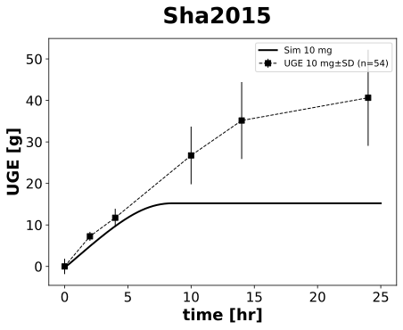
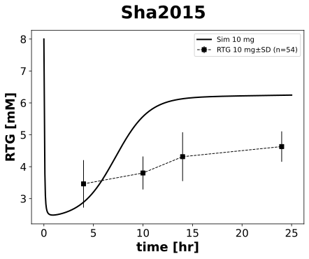

Sha2015
Models
Datasets
- canagliflozin_CAN300: Sha2015_canagliflozin_CAN300.tsv
- dapagliflozin_DAP10: Sha2015_dapagliflozin_DAP10.tsv
- glucose_CAN300: Sha2015_glucose_CAN300.tsv
- glucose_DAP10: Sha2015_glucose_DAP10.tsv
- glucose_cumulative_amount_CAN300: Sha2015_glucose_cumulative_amount_CAN300.tsv
- glucose_cumulative_amount_DAP10: Sha2015_glucose_cumulative_amount_DAP10.tsv
- glucose_placebo: Sha2015_glucose_placebo.tsv
- renal_threshold_CAN300: Sha2015_renal_threshold_CAN300.tsv
- renal_threshold_DAP10: Sha2015_renal_threshold_DAP10.tsv
Figures
- dapagliflozin plasma: Sha2015_dapagliflozin plasma.svg
- Fig_uge: Sha2015_Fig_uge.svg
- Fig_rtg: Sha2015_Fig_rtg.svg
{kind=link}
{kind=link}
dapagliflozin plasma

|
Fig_uge
|  |
Fig_rtg
|  |
Code
../../../../experiments/studies/sha2015.py
from typing import Dict
from sbmlsim.data import DataSet, load_pkdb_dataframe
from sbmlsim.fit import FitMapping, FitData
from sbmlutils.console import console
from pkdb_models.models.dapagliflozin.experiments.base_experiment import (
DapagliflozinSimulationExperiment
)
from pkdb_models.models.dapagliflozin.experiments.metadata import Tissue, Route, Dosing, ApplicationForm, Health, \
Fasting, DapagliflozinMappingMetaData
from sbmlsim.plot import Axis, Figure
from sbmlsim.simulation import Timecourse, TimecourseSim
from pkdb_models.models.dapagliflozin.helpers import run_experiments
class Sha2015(DapagliflozinSimulationExperiment):
"""Simulation experiment of Sha2015."""
colors = {10: "black"}
bodyweight = 78.9 # [kg]
gfr = 96.8 # [ml/min/1.73*m^2]
def datasets(self) -> Dict[str, DataSet]:
dsets = {}
for fig_id in ["Fig2", "Fig3"]:
df = load_pkdb_dataframe(f"{self.sid}_{fig_id}", data_path=self.data_path)
for label, df_label in df.groupby("label"):
dset = DataSet.from_df(df_label, self.ureg)
dsets[f"{label}"] = dset
# console.print(dsets)
# console.print(dsets.keys())
return dsets
def simulations(self) -> Dict[str, TimecourseSim]:
Q_ = self.Q_
tcsims = {}
# single dose
tcsims[f"po_dap10"] = TimecourseSim(
Timecourse(
start=0,
end=25 * 60, # [min]
steps=500,
changes={
**self.default_changes(),
# physiological changes
"BW": Q_(self.bodyweight, "kg"),
"[KI__glc_ext]": Q_(self.fpg_healthy, "mM"),
"KI__f_renal_function": Q_(self.gfr / 100, "dimensionless"), # [0, 1] <=> [0, 100] gfr
"GU__f_absorption": Q_(self.fasting_map["fasted"], "dimensionless"),
"f_cirrhosis": Q_(self.cirrhosis_map["Control"], "dimensionless"),
# dose (IVDOSE, PODOSE)
"PODOSE_dap": Q_(10, "mg"),
},
)
)
return tcsims
def fit_mappings(self) -> Dict[str, FitMapping]:
mappings = {}
for name, sid in [
('dapagliflozin', '[Cve_dap]'),
('glucose_cumulative_amount', 'KI__UGE'),
('renal_threshold', 'KI__RTG'),
]:
mappings[f"task_po_dap10_{name}"] = FitMapping(
self,
reference=FitData(
self,
dataset=f"{name}_DAP10",
xid="time",
yid="mean",
yid_sd="mean_sd",
count="count",
),
observable=FitData(
self, task=f"task_po_dap10", xid="time", yid=sid,
),
metadata=DapagliflozinMappingMetaData(
tissue=Tissue.URINE if "cumulative" in name else Tissue.PLASMA,
route=Route.PO,
application_form=ApplicationForm.TABLET,
dosing=Dosing.SINGLE,
health=Health.HEALTHY,
fasting=Fasting.FASTED,
),
)
# console.print(mappings)
return mappings
def figures(self) -> Dict[str, Figure]:
return {
**self.figure_plasma(),
**self.figure_uge(),
**self.figure_rtg()
}
def figure_plasma(self) -> Dict[str, Figure]:
fig = Figure(
experiment=self,
sid="dapagliflozin plasma",
name=f"{self.__class__.__name__}",
)
plots = fig.create_plots(xaxis=Axis(self.label_time, unit=self.unit_time), legend=True)
plots[0].set_yaxis(self.label_dap_plasma, unit=self.unit_dap)
# simulation
plots[0].add_data(
task=f"task_po_dap10",
xid="time",
yid=f"[Cve_dap]",
label=f"sim dap 10 mg",
color=self.colors[10],
)
# data
plots[0].add_data(
dataset=f"dapagliflozin_DAP10",
xid="time",
yid="mean",
yid_sd="mean_sd",
count="count",
label=f"dap 10 mg",
color=self.colors[10],
)
return {
fig.sid: fig,
}
def figure_uge(self) -> Dict[str, Figure]:
fig = Figure(
experiment=self,
sid="Fig_uge",
name=f"{self.__class__.__name__}",
)
plots = fig.create_plots(xaxis=Axis(self.label_time, unit=self.unit_time), legend=True)
plots[0].set_yaxis(self.label_uge, unit=self.unit_uge)
# simulation
plots[0].add_data(
task=f"task_po_dap10",
xid="time",
yid=f"KI__UGE",
label=f"Sim 10 mg",
color=self.colors[10],
)
# data
plots[0].add_data(
dataset=f"glucose_cumulative_amount_DAP10",
xid="time",
yid="mean",
yid_sd="mean_sd",
count="count",
label=f"UGE 10 mg",
color=self.colors[10],
)
return {
fig.sid: fig,
}
def figure_rtg(self) -> Dict[str, Figure]:
fig = Figure(
experiment=self,
sid="Fig_rtg",
name=f"{self.__class__.__name__}",
)
plots = fig.create_plots(xaxis=Axis(self.label_time, unit=self.unit_time), legend=True)
plots[0].set_yaxis(self.label_rtg, unit=self.unit_rtg)
# simulation
plots[0].add_data(
task=f"task_po_dap10",
xid="time",
yid=f"KI__RTG",
label=f"Sim 10 mg",
color=self.colors[10],
)
# data
plots[0].add_data(
dataset=f"renal_threshold_DAP10",
xid="time",
yid="mean",
yid_sd="mean_sd",
count="count",
label=f"RTG 10 mg",
color=self.colors[10],
)
return {
fig.sid: fig,
}
if __name__ == "__main__":
run_experiments(Sha2015, output_dir=Sha2015.__name__)